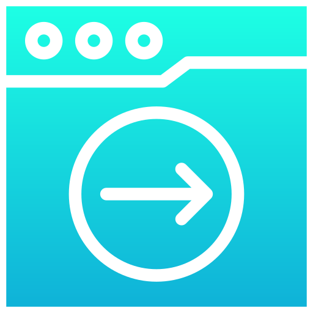

Doraemon is a Japanese manga and anime series and franchise about the character Doraemon. It was written and illustrated by Fujiko Fujio. It was started in a children’s magazine in 1969. Doraemon is the name of a robot cat that came from the future to help a boy named Nobita Nobi. Doraemon is about the life of Nobita Nobi. In a typical story Doramon uses a gadget to solve a problem for Nobita, but Nobita goes too far and ends up being punished and learning a lesson.
A cat-like robot from the 22nd century. After being asked to by Sewashi Nobi, Doraemon came to the present to help Nobita....

Nobita Nobi is the main protagonist of the Doraemon franchise. He is a 10-year-old fourth grader in Tokyo's Nerima Ward who was born on August 7, and an only child....
Shizuka Minamoto, usually called Shizu-chan or Shizuka-chan, is the tritagonist of the Doraemon franchise. She is Nobita Nobi's childhood friend and crush who was born on May 8.
Takeshi Gouda, more commonly known by his nickname Jaian, Gian or Big G in the American and UK versions, is one of the main characters of the Doraemon franchise....
Takeshi Gouda, more commonly known by his nickname Jaian, Gian or Big G in the American and UK versions, is one of the main characters of the Doraemon franchise....